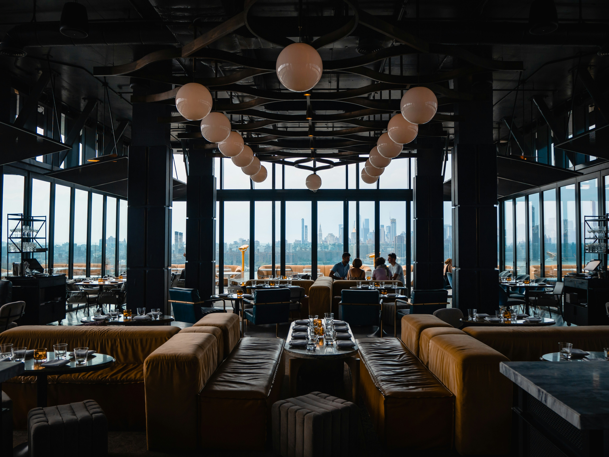

Ambiente Familiar e Aconchegante
Um ambiente preparado para receber você e sua família com conforto, tradição nordestina e muita comida boa.



O Sabor Nordestino nasceu da paixão pela culinária tradicional do Nordeste brasileiro.
Nosso objetivo é oferecer pratos preparados com ingredientes frescos, preservando receitas que passam de geração em geração.
Av. Simão de Góis, 1525
Centro — Jaguaruana, CE
⏰ Segunda a Sexta: 11h às 22h
⏰ Sábado e Domingo: 10h às 23h